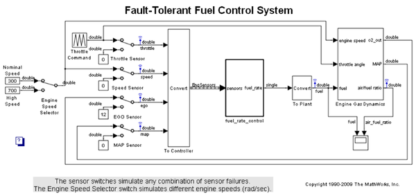
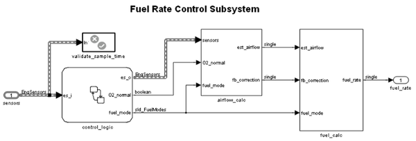
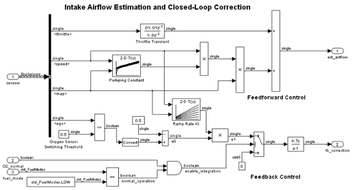
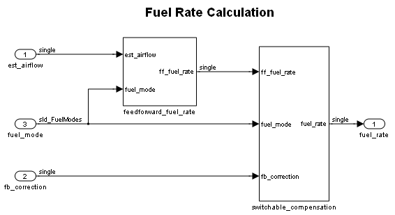
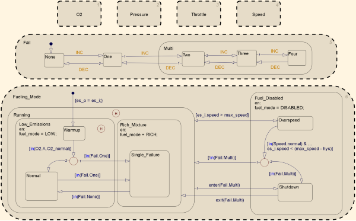
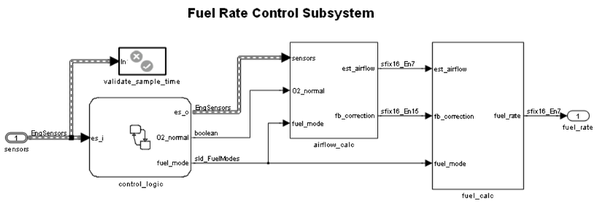
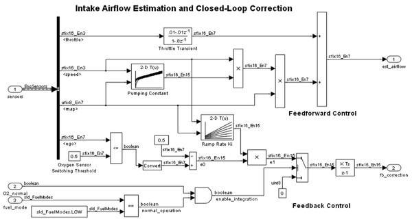
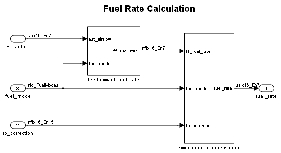
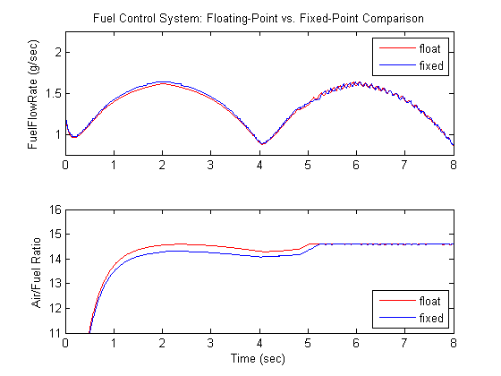
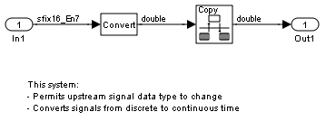

Fixed-Point Fuel Rate Control System
In this demonstration you will perform a floating-point and a fixed-point simulation of a fuel rate control system designed using Simulink® and Stateflow®. The controller leverages Simulink numeric types to switch easily between the floating-point and fixed-point simulation. To familiarize yourself with the fuel rate control model see sldemo_fuelsys.
Contents
- Open and Compile the Model
- View the Floating-Point Fuel Rate Control System
- View the Floating-Point Airflow Calculation
- View the Floating-Point Fuel Calculation
- View the Floating-Point Control Logic
- Switch Data Types from Floating-Point to Fixed-Point
- View the Fixed-Point Fuel Rate Control System
- View the Fixed-Point Airflow Calculation
- View the Fixed-Point Fuel Calculation
- Compare the Floating-Point to Fixed-Point Result
- Use a Flexible Data Typing Strategy
- Special Considerations for Simulink Bus Signals
- View the Controller Input Conversion
- View the Controller Output Conversion
- Closing Remarks
Open and Compile the Model
The sldemo_fuelsys model is a closed-loop system containing a "plant" and "controller". In this example, the plant is the root model and the controller is the "fuel_rate_control" subsystem. The plant is used to continuously validate the design of the controller. This plant also facilitates the conversion of floating-point to fixed-point type. Initially, the model is configured for a floating-point simulation, as is seen by the data type display on the signal lines. Let's take a look at the data types for first two levels of hierarchy.
Open sldemo_fuelsys via fxpdemo_fuelsys and compile the diagram to see see the signal data types. Initially, the controller is configured to use single precision data types.
fxpdemo_fuelsys sldemo_fuelsys([],[],[],'compile'); sldemo_fuelsys([],[],[],'term');
View the Floating-Point Fuel Rate Control System
open_system('sldemo_fuelsys/fuel_rate_control');
 View the Floating-Point Airflow Calculation
open_system('sldemo_fuelsys/fuel_rate_control/airflow_calc');
 View the Floating-Point Fuel Calculation
open_system('sldemo_fuelsys/fuel_rate_control/fuel_calc');
 View the Floating-Point Control Logic
open_system('sldemo_fuelsys/fuel_rate_control/control_logic');
 Now let's remove the window clutter.
close_system('sldemo_fuelsys/fuel_rate_control/airflow_calc');
close_system('sldemo_fuelsys/fuel_rate_control/fuel_calc');
close_system('sldemo_fuelsys/fuel_rate_control/control_logic'); hDemo.rt=sfroot;hDemo.m=hDemo.rt.find('-isa','Simulink.BlockDiagram'); hDemo.c=hDemo.m.find('-isa','Stateflow.Chart','-and','Name','control_logic'); hDemo.c.visible=false;
close_system('sldemo_fuelsys/fuel_rate_control');
Switch Data Types from Floating-Point to Fixed-Point
The Fixed-Point Advisor was utilized to convert the controller from a floating-point implementation to an equivalent fixed-point implementation. See fxpdemo_fpa for details of the Fixed-Point Advisor. You can also optimize and explore the fixed-point design using the Fixed-Point Tool. See fxpdemo_feedback for details of the Fixed-Point Tool.
The plant simulates using double precision data types. As mentioned, the "fuel_rate_control" subsystem is configured such that it is easy to switch between floating-point and fixed-point data types. This is done by configuring blocks to reference Simulink numeric types in the MATLAB workspace.
This model uses four scalings for its computations:
- u8En7 (unsigned 8-bit, binary point 7 scaling)
- s16En3 (signed 16-bit, binary point 3 scaling)
- s16En7 (signed 16-bit, binary point 7 scaling)
- s16En15 (signed 16-bit, binary point 15 scaling)
View these objects in the MATLAB Workspace.
whos u8En7 s16En3 s16En7 s16En15
Name Size Bytes Class Attributes s16En15 1x1 Simulink.NumericType s16En3 1x1 Simulink.NumericType s16En7 1x1 Simulink.NumericType u8En7 1x1 Simulink.NumericType
For a floating-point simulation the numeric types are set to single precision. The DataTypeMode property of the Simulink numeric object is set to use 'Single'. Alternatively, you can set them to double.
u8En7 = fixdt('single'); s16En3 = fixdt('single'); %#ok s16En7 = fixdt('single'); %#ok s16En15 = fixdt('single'); %#ok disp(u8En7)
Simulink.NumericType
DataTypeMode: 'Single'
IsAlias: false
HeaderFile: ''
Description: ''
The model is configured to log simulation data for the top-level signals, whereby the result of a simulation is stored into workspace variable sldemo_fuelsys_output. We'll save the result of the simulation in hDemo.flt_out for later comparison with the fixed-point simulation.
set_param('sldemo_fuelsys','StopTime','8') sim('sldemo_fuelsys') hDemo.flt_out = sldemo_fuelsys_output;
To switch to a fixed-point simulation the Simlulink numeric types are set to fixed-point values. Specifically, the DataTypeMode is set to use binary point scaling.
u8En7 = fixdt(0,8,7); s16En3 = fixdt(1,16,3); s16En7 = fixdt(1,16,7); s16En15 = fixdt(1,16,15); disp(u8En7)
Simulink.NumericType
DataTypeMode: 'Fixed-point: binary point scaling'
Signedness: 'Unsigned'
WordLength: 8
FractionLength: 7
IsAlias: false
HeaderFile: ''
Description: ''
Rerun the simulation for the fixed-point implementation. You can see the fixed-point data types on the signals. We'll store the result of the simulation in hDemo.fxp_out.
sim('sldemo_fuelsys')
hDemo.fxp_out = sldemo_fuelsys_output;
View the Fixed-Point Fuel Rate Control System
open_system('sldemo_fuelsys/fuel_rate_control');
 View the Fixed-Point Airflow Calculation
open_system('sldemo_fuelsys/fuel_rate_control/airflow_calc');
 View the Fixed-Point Fuel Calculation
open_system('sldemo_fuelsys/fuel_rate_control/fuel_calc');
 Compare the Floating-Point to Fixed-Point Result
Let's compare the result of the simulation for the fuel flow rate and the air fuel ratio.
figure('Tag','CloseMe'); subplot(2,1,1); plot(hDemo.flt_out.fuel.Time, hDemo.flt_out.fuel.Data,'r-'); hold plot(hDemo.fxp_out.fuel.Time, hDemo.fxp_out.fuel.Data,'b-'); ylabel('FuelFlowRate (g/sec)'); title('Fuel Control System: Floating-Point vs. Fixed-Point Comparison'); legend('float','fixed') axis([0 8 .75 2.25]); subplot(2,1,2); plot(hDemo.flt_out.air_fuel_ratio.Time, hDemo.flt_out.air_fuel_ratio.Data,'r-'); hold plot(hDemo.fxp_out.air_fuel_ratio.Time, hDemo.fxp_out.air_fuel_ratio.Data,'b-'); ylabel('Air/Fuel Ratio'); xlabel('Time (sec)') legend('float','fixed','Location','SouthEast') axis([0 8 11 16]);
Current plot held Current plot held
Use a Flexible Data Typing Strategy
You have seen that a model can be configured to switch between floating point and fixed-point data using Simulink numeric types. Inside a closed-loop model, such as this one, care must be taken to have such flexibility. In this example, double precision data is converted to and from the plant using data type conversion blocks. On both sides of the controller, the output data type of the conversion blocks are set to Inherit: Inherit via back propagation. This allows the control system to change data type implementation without conflicting with the plant data types.
Special Considerations for Simulink Bus Signals
Also noteworthy is the configuration of the data types for the Simulink bus object used in this model: EngSensors. Individual bus element data types are specified using the same Simulink numeric objects as previously discussed. This bus has four elements.
disp(EngSensors.Elements(1)) disp(EngSensors.Elements(2)) disp(EngSensors.Elements(3)) disp(EngSensors.Elements(4))
Simulink.BusElement
Name: 'throttle'
DataType: 's16En3'
Complexity: 'real'
Dimensions: 1
DimensionsMode: 'Fixed'
SamplingMode: 'Sample based'
SampleTime: -1
Simulink.BusElement
Name: 'speed'
DataType: 's16En3'
Complexity: 'real'
Dimensions: 1
DimensionsMode: 'Fixed'
SamplingMode: 'Sample based'
SampleTime: -1
Simulink.BusElement
Name: 'ego'
DataType: 's16En7'
Complexity: 'real'
Dimensions: 1
DimensionsMode: 'Fixed'
SamplingMode: 'Sample based'
SampleTime: -1
Simulink.BusElement
Name: 'map'
DataType: 'u8En7'
Complexity: 'real'
Dimensions: 1
DimensionsMode: 'Fixed'
SamplingMode: 'Sample based'
SampleTime: -1
View the Controller Input Conversion
Data Type Conversion blocks isolate the plant from the controller. The sample time is also converted from continuous to discrete using a Rate Transition Block.
open_system('sldemo_fuelsys/To Controller')

View the Controller Output Conversion
A Data Type Conversion block isolates the controller from the plant. The sample time is also converted from discrete to continuous time using a Rate Transition Block.
open_system('sldemo_fuelsys/To Plant')
 Close the model, figures and workspace variables associated with demo
close_system('sldemo_fuelsys',0); close(findobj(0,'Tag','CloseMe')); clear hDemo
Closing Remarks
You can generate production C/C++ code using Real-Time Workshop® Embedded Coder™. Refer to Table 1 for demos related to sldemo_fuelsys.
| Production C/C++ code generation | rtwdemo_fuelsys |
| Fixed-point production C/C++ code generation | rtwdemo_fuelsys_fxp |
Table 1: Related product demos using sldemo_fuelsys